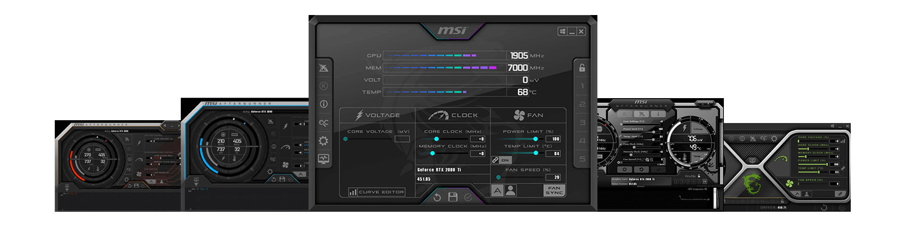

ROUND NOTES
Keep observations attached to the exact round where they happened.
CORE
Connect your own in-game observations with the context of your VALORANT matches, turning them into structured VOD review sessions.
Begin a review when you are ready. In the standalone app, the player explicitly controls when the session starts and ends.
Move through the VOD and record decisions, mistakes, ideas and anything worth remembering.
Use your accumulated notes to identify recurring decisions and areas worth improving.
The future Overwolf version may also support configurable automatic session handling using GEP, while keeping manual control available.
Independent, open-source and built for VALORANT players who want a better review workflow.